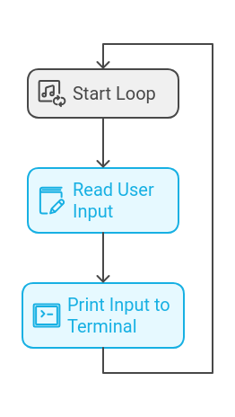

Familiarize yourself with how a shell works, what it does, and its core components.
Actions:
Study how basic commands are executed in Bash or other shells.
Understand processes, fork(), execve(), and how a shell handles child processes.
Review how redirections (<, >, >>) and pipes (|) work.
2. Set Up Your Project Structure
Organize your codebase to ensure you can build, test, and debug easily.
Actions:
Create the basic file structure, separating functionalities into modules (e.g., parsing, execution, built-ins, etc.).
Set up the Makefile for easy compilation.
3. Basic Input Handling
Capture user input and print it for basic testing.
Actions:
Implement a loop that continuously reads user input.
Test this by simply printing the input back to the terminal (readline() is often used for this).

4. Command Parsing
Convert the raw input into commands and arguments that the shell can interpret.
Actions:
Implement a basic tokenizer to split the input string into individual commands and arguments.
Handle special characters like quotes ('' or "") to preserve the integrity of arguments containing spaces.
Identify commands, arguments, and operators (e.g., |, >, >>, <).
5. Environment Variables Handling
Implement functions to manage environment variables (e.g., $PATH, $HOME).
Actions:
Create helper functions to retrieve and manipulate environment variables.
Make sure commands can use these variables dynamically during execution.
6. Implement Built-in Commands
Implement core shell commands like cd, echo, pwd, export, unset, env, and exit.
Actions:
Write individual functions for each built-in command.
Make sure to handle special cases for each, like cd with or without arguments or exit with a status code.
7. Process Management (Fork and Exec)
Start executing external commands using fork() and execve().
Actions:
Implement the logic for creating a new process with fork() and replacing the process image with the desired command using execve().
Handle the waiting and reaping of child processes with wait() or waitpid().
8. Implement Redirections (<, >, >>)
Handle input/output redirection so commands can read/write from/to files.
Actions:
Redirect stdin and stdout using dup2() for file operations.
Implement logic for >, >> (append mode), and < (input redirection).
9. Pipes (|)
Handle piping so the output of one command becomes the input of another.
Actions:
Use pipe() to create a pipe and dup2() to redirect the file descriptors for the commands.
Ensure the shell can handle multiple pipes (e.g., cmd1 | cmd2 | cmd3).
10. Signal Handling
Handle common signals like Ctrl+C, Ctrl+D, and Ctrl+\ for interrupting processes or closing the shell.
Actions:
Implement signal handling using signal() or sigaction().
Customize the behavior of the shell for specific signals, e.g., ignoring Ctrl+C during command input.
11. Memory Management and Error Handling
Ensure your shell is leak-free and robust against bad inputs or edge cases.
Actions:
Use tools like valgrind to check for memory leaks.
Implement proper error messages and exit codes for failed commands or operations.
Ensure the shell doesn’t crash on invalid inputs (e.g., malformed redirections, pipes without commands).
12. Testing and Debugging
Rigorously test your shell to ensure it works in all expected scenarios.
Actions:
Test each feature incrementally as you build them.
Test edge cases, such as invalid commands, excessive pipes, or incorrect redirection formats.
13. Final Polishing
Finalize your shell, ensuring usability and stability.
Actions:
Add features such as a command history (optional) using readline().
Ensure consistent formatting of the prompt, clean output, and user-friendly error messages.
Overview
Building a shell from scratch is a challenging but rewarding project that will deepen your understanding of operating systems, processes, and system calls. By following these steps, you can build a functional shell that can execute basic commands, handle redirections and pipes, and manage processes effectively.